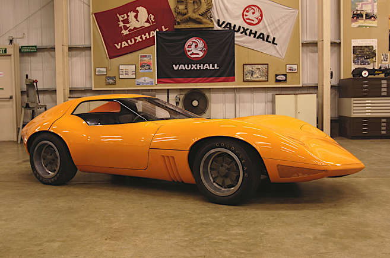

<!DOCTYPE html>
<html lang="en">
<head>
    <meta charset="UTF-8">
    <meta name="viewport" content="width=device-width, initial-scale=1.
    0">
    <title>Document1</title>
    <style>
       p{
        color: blue;
        font-size: large;
        font-family: Arial, "Helvetica Neue", Helvetica, sans-serif;
        margin-top: 0%;
        font-style: italic;
       } 
    </style>
  <STyle>
    HEADER{
        color: rgb(42, 23, 23);
        font-size: xx-large;
        font-family: Arial, Helvetica, sans-serif;
        margin-top:0%;
    }
  </STyle>
  <style>
    @media(max-width:300px){
      
    }
  </style> 
</head>
<body>
    
</body>
</html>
<CENter>   <header>SUPERCARS THAT NEVER MADE IT TO PRODUCTION</header></CENter>

<div class="wrapper">
  <article class="img-infor">
<p>It seems odd to think of a four-cylinder Vauxhall as a supercar, but the XVR was a special case. Quite unlike anything else the company has ever made, it was a two-seat coupe with a clamshell bonnet, a rear-hinged tail and two upward-opening doors, each of whose glass served both as a side window and half the windscreen. (The engineers lobbied for a more conventional gullwing arrangement, but the styling department said no.)

    This car, the only one of the three built which actually ran, was usually powered by Vauxhall’s slant-four engine, though a smaller unit was fitted for the car’s debut at the 1966 Geneva Show. For some reason, it was attacked with an axe while on display in Canada and had to be broken up. Of the two fibreglass-bodied non-runners which followed, one was dismantled as a matter of company policy, but the other has survived and is part of the Vauxhall Heritage Collection.</p>

<p>Jaguar XJ13 (1966)</p>
   <p>©Jaguar</p>
    <p> things had gone differently, the XJ13 – and not the Lamborghini Miura – might have been the world’s first mid-engined supercar. Plans were being made for a new racing car (which would probably have been produced for road use too) in the early 1960s, but the single example wasn’t built until 1966, and by that time it probably wouldn’t have been competitive against the Ford GT40, which won the Le Mans 24 Hour race every year from then until 1969.
    
    The project was shelved, and the 5.0-litre V12-powered XJ13 did nothing more exciting than a few high-speed runs before it crashed heavily during a filming session in 1971. Comprehensively rebuilt, it still exists today at the British Motor Museum at Gaydon as a reminder of what might have been.</p>
    
    <p>Alfa Romeo Carabo (1968)
        ©Stellantis
        In Alfa Romeo’s own words, Marcello Gandini (born 1938) “abandoned the compass in favour of a ruler” when designing, on behalf of Bertone, the wedge-shaped Carabo. This was derived from the much curvier Alfa 33 Stradale, itself based on the Tipo 33 race car, and used the same 2.0-litre V8 engine mounted ahead of the rear axle.
        
        During the design process, Gandini invented scissor doors, which would later be seen on many supercars which actually went on sale. These included the Lamborghini Countach, which visually resembled the Carabo in other ways too</p>
    
    <p>Chevrolet Aerovette (1969)
        ©GM
        Chevrolet launched its first ever mid-engined Corvette in 2019, but with the Aerovette was a serious attempt to achieve the same back in the 1960s. It was designed by Zora Aarkus-Duntov, known as the ‘Father of the Corvette’, and moved the idea of the American supercar forward in a significant way. That included using a pair of rotary engines developing 420bhp that would have made the car very light and powerful.
        
        Problems arose when Chevrolet’s general manager, John DeLorean, canned the project on cost grounds and then exhumed it in 1970 in response to the Ford-back De Tomaso Pantera for a motorshow appearance. None of this helped the Aerovette into production and customer research showed much resistance among existing Corvette drivers to a mid-engined model.</p>
        
        <p>Mercedes-Benz C 111 (1969)
          ©Mercedes-Benz
          Mercedes built several examples of the mid-engined, gullwing-doored C 111 sports car in nine years. In supercar terms, this almost makes it a production model, but none of them was intended for public sale. The first 11 were all powered by rotary engines (either three-rotor producing around 280bhp or four-rotor producing nearer 350bhp), which provided enough information to convince Mercedes that rotaries were not the way forward.</p>
          
        <p>Later versions were powered by turbo diesel engines, and set a great many speed records during two marathon sessions at the Nardo test track in Italy. Some cars were also converted to take naturally-aspirated 3.5-litre and twin-turbocharged 4.8-litre petrols V8s. The latter produced nearly 500bhp, and gave the C 111 a measured top speed of 250mph.</p>
        <a href="project5.html">next</a>
  
    